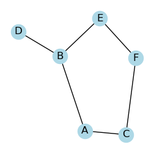

Python codes for Network Science, Barabási, 2013.¶
Barabási, A.L., 2013. Network science. Philosophical Transactions of the Royal Society A: Mathematical, Physical and Engineering Sciences, 371(1987), p.20120375.
Installation, How to use¶
using on Colab (Recommended)
Go to examples
Open a notebook and click on “open on colab”
Uncomment the cell with pip install command to install the netsci package.
using on local machines
pip3 install -e .
# or
pip install "git+https://github.com/Ziaeemehr/netsci.git"
Indices and tables¶
Quick Start¶
First import the necessary libraries:
import networkx as nx
import matplotlib.pyplot as plt
from netsci.plot import plot_graph
from netsci.analysis import find_sap
Next, create a simple graph with self-avoiding edges (SAE) between nodes.
G = nx.Graph()
edges = [("A", "B"), ("A", "C"), ("B", "D"), ("B", "E"), ("C", "F"), ("E", "F")]
G.add_edges_from(edges)
Now, find all self-avoiding paths from a given start node to a target node.
start_node = "A"
target_node = "F"
all_saps = list(find_sap(G, start_node, target_node))
for path in all_saps:
print("->".join(path))
Finally, visualize the graph.
plot_graph(G, seed=2, figsize=(3, 3))
{kind=link}

API and documentation¶
netsci.analysis¶
- find_sap(G, start, target, path=None)[source]¶
Finds all self-avoiding paths (SAPs) in a given graph from a start node to a target node. A self-avoiding path is a path that does not revisit any node.
- Parameters:
- graphNetworkX graph
The input graph where SAPs will be found.
- startstr or int
The node where the search for SAPs starts.
- targetstr or int
The node where the search for SAPs ends.
- pathlist, optional
Internal parameter used to keep track of the current path during the search.
- Yields:
- list
A self-avoiding path from the start node to the target node.
Examples
>>> import networkx as nx >>> G = nx.Graph() >>> edges = [('A', 'B'), ('A', 'C'), ('B', 'D'), ('B', 'E'), ('C', 'F'), ('E', 'F')] >>> G.add_edges_from(edges) >>> start_node = 'A' >>> target_node = 'F' >>> all_saps = list(find_sap(G, start_node, target_node)) >>> for path in all_saps: >>> print("->".join(path))
- find_hamiltonian_path(G)[source]¶
find the Hamiltonian path in given graph.
- Parameters:
- G: nx.Graph or nx.DiGraph
input graph.
- Returns
- valuelist of nodes in Hamiltonian path if exists, otherwise None.
- check_connectivity(G)[source]¶
Check if the graph is connected.
- Parameters:
- Gnetworkx.Graph, networkx.DiGraph
The input graph.
- Returns:
- connectivity: (str)
for directed graphs, it returns - “weakly connected” - “strongly connected” - “disconnected”. for undirected graphs, - “connected” - “disconnected”.
- graph_info(G, quick=True)[source]¶
Generate various graph information.
- Parameters:
- G(networkx.Graph, networkx.DiGraph)
The input graph for which the information is to be generated.
- longest_shortest_path(G)[source]¶
Calculate the longest shortest path (diameter) in a given graph.
- Parameters:
- G (networkx.Graph or networkx.DiGraph):
The input graph, which can be directed or undirected. The graph should be connected, otherwise the diameter will not be defined.
- Returns:
- valueint, float
The longest shortest path (diameter) in the graph. If the graph is empty, returns 0. If the graph is not connected, returns float(‘inf’).
netsci.utils¶
- get_adjacency_list(G)[source]¶
Generate an adjacency list representation of a given graph.
- Parameters:
- G (networkx.Graph, networkx.DiGraph):
The input graph for which the adjacency list is to be generated.
- Returns:
- value: dict
A dictionary where each key is a node in the graph and the corresponding value is a list of neighboring nodes.
- load_sample_graph(name, verbose=False)[source]¶
Load a graph and return it as a NetworkX graph.
- Parameters:
- name: str
The name of the graph. Get names from
netsci.utils.show_sample_graphs().- verbose: bool, optional
If True, print information about the loaded graph. Default is True.
- Returns:
- value: networkx.Graph
Loaded graph.
- generate_power_law_dist(N: int, a: float, xmin: float)[source]¶
generate power law random numbers p(k) ~ x^(-a) for a>1
- Parameters:
- N:
is the number of random numbers
- a:
is the exponent
- xmin:
is the minimum value of distribution
- Returns:
- value: np.array
powerlaw distribution
- generate_power_law_dist_bounded(N: int, a: float, xmin: float, xmax: float, seed: int = -1)[source]¶
Generate a power law distribution of floats p(k) ~ x^(-a) for a>1 which is bounded by xmin and xmax
- parameters :
- N: int
number of samples in powerlaw distribution (pwd).
- a:
exponent of the pwd.
- xmin:
min value in pwd.
- xmax:
max value in pwd.
- generate_power_law_discrete(N: int, a: float, xmin: float, xmax: float, seed: int = -1)[source]¶
Generate a power law distribution of p(k) ~ x^(-a) for a>1, with discrete values.
- tune_min_degree(N: int, a: float, xmin: int, xmax: int, max_iteration: int = 100)[source]¶
Find the minimum degree value of a power law graph that results in a connected graph
- make_powerlaw_graph(N: int, a: float, avg_degree: int, xmin: int = 1, xmax: int = 10000, seed: int = -1, xtol=0.01, degree_interval=5.0, plot=False, **kwargs)[source]¶
make a powerlaw graph with the given parameters
- Parameters:
- N:
number of nodes
- a: float
exponent of the power law distribution
- avg_degree:
expected average degree
- xmin: int, optional
minimum value in the power law distribution. Default is 1.
- xmax: int, optional
maximum value in the power law distribution. Default is 10000.
- seed: int, optional
Seed for reproducibility. Default is -1.
- xtol: float, optional
tolerance for bisection method. Default is 0.01.
- degree_interval: float, optional
interval for bisection method. Default is 5.0.
- plot: bool, optional
If True, plot the power law distribution. Default is False.
- kwargs: obtional
additional keyword arguments for plot_pdf function.
- generate_power_law_discrete_its(alpha: float, k_min: int, k_max: int, size: int = 1)[source]¶
Generates the power law discrete distributions using the inverse transform sampling method.
- Parameters:
- alpha
Power law exponent.
- k_min
Minimum degree.
- k_max
Maximum degree.
- size
Number of samples to generate. Defaults to 1.
- Returns:
- np.array:
Array of generated power law discrete distributions.
References
Devroye, L. (1986). “Non-Uniform Random Variate Generation.” Springer-Verlag, New York.
Examples
>>> gamma = 2.5 # Power-law exponent >>> k_min = 1 # Minimum value of k >>> k_max = 1000 # Maximum value of k >>> size = 10000 # Number of samples >>> samples = power_law_discrete(gamma, k_min, k_max, size)
netsci.plot¶
- plot_graph(G, **kwargs)[source]¶
Plots a NetworkX graph with customizable options.
- Parameters:
- GNetworkX graph
A NetworkX graph object (e.g., nx.Graph, nx.DiGraph).
- **kwargskeyword arguments
Additional keyword arguments to customize the plot. These can include:
- node_colorstr or list, optional
Color of the nodes (can be a single color or a list of colors).
- node_sizeint or list, optional
Size of the nodes (single value or list of sizes).
- edge_colorstr or list, optional
Color of the edges (can be a single color or a list of colors).
- widthfloat, optional
Width of the edges.
- with_labelsbool, optional
Whether to draw node labels or not.
- font_sizeint, optional
Size of the font for node labels.
- font_colorstr, optional
Color of the font for node labels.
- titlestr, optional
Title of the plot.
- seedint, optional
Seed for the random layout algorithm.
- figsizetuple, optional
Size of the figure.
- ax: axes object
Axes object to draw the plot on. Defaults to None, which will create a new figure.
- pos: object, optional
Graph layout (e.g., nx.spring_layout, nx.circular_layout), nx.kamada_kaway_layout(G). Defaults to nx.spring_layout(G).